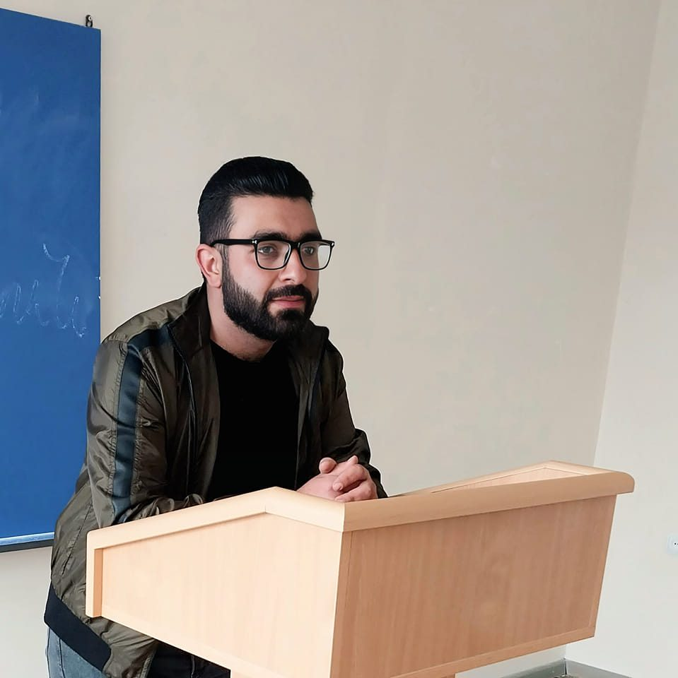

ԲԱՐԻ ԳԱԼՈՒՍՏ ԻՄ ՊՈՐՏՖՈԼԻՈ
Իմ մասին

Ես Հովհաննեսն եմ, քսանմեկ տարեկան։ Սովորում եմ Հայաստանի Եվրոպական Համալսարանի Գյումրու
մասնաճյուղում՝ «իրավագիտություն» բաժնում։ Փոքր հասակից սիրել եմ մաթեմատիկան և նորագույն
տեխնոլոգիաները։ Մասնակցել եմ ծրագրավորման մի շարք դասընթացների, որոնց շնորհիվ բավականին գիտելիքներ
եմ ստացել ոլորտի մասին։ Մասնակցել եմ նաև մի շարք ոչ ֆորմալ կրթական ծրագերի, գիտելիքներ ստացել շատ
տարբեր ոլորտներից։ 2020 թվականին մեկնել եմ պարտադիր զինվորական ծառայության, մասնակցել Արցախյան
պատերազմին։ Զորացրվել եմ 2022 թվականին։ Զորացրվելուց հետո որոշել եմ չբավարարվել համալսարանական
գիտելիքներով և զուգահեռ զբաղվել ծրագրավորմամբ։ Այժմ սովորում եմ «Full Stack» ծրագրավորում՝ GITC-ում։
Սիրում եմ ինքնակրթվել։ Տիրապետում եմ MS Office փաթեթներին,
կարողանում եմ աշխատել git-github/gitlab-ի հետ։ Նաև գիտեմ html, css, js: Իմ աշխատանքները կարող
եք տեսնել աշխատանքներ բաժնում։
ԿՐԹՈՒԹՅՈՒՆ
2008-2020 թվականներին սովորել եմ Շիրակի մարզի Կամո գյուղի միջնակարգ դպրոցում։ 2018֊2019
թվականներին մասնակցել եմ «Yandex school»-ին։ 2016֊2020 թվականներին հաճախել եմ Գյումրու
տեխնոլոգիական կենտրոն։ 2022 թվականից սովորում եմ Եվրոպական Համալսարանի Գյումրու մասնաճյուղի
«Իրավագիտություն» բաժնում:
ՎԵՐԱՊԱՏՐԱՍՏՈՒՄՆԵՐ
| Կազմակերպությունը |
Թեման |
Ժամանակահատվածը |
| Խաղաղության երկխոսություն |
քաղ․ լրագրություն |
2019-2020 |
| Ժուռնալիստների «Ասպարեզ» ակումբ |
Հանքարդյունաբերության բնապահպանական խնդիրները |
15/07/2019 – 20/07/2019 |
| Ժուռնալիստների «Ասպարեզ» ակումբ |
Տեղական ինքնակառավարումը Հայաստանում․ իրավիճակ, մարտահրավերներ և խնդիրներ |
05/07/2019 – 10/07/2019 |
| World Vision Armenia |
Սոցիալական ծրագրերի կազմում, մարքեթինգ |
07/09/2018 – 09/09/2018 |
| Հայկական Կարտիտաս |
Ակումբավարների կարողությունների զարգացում |
26/07/2018 – 28/07/2018 |
| Հայկական Կարտիտաս |
ՄԻԱՎ/ՁԻԱՀ-ի կանխարգելումը երիտասարդների շրջանում |
22/03/2017 – 24/03/2017 |
ԿԱՄԱՎՈՐԱԿԱՆ ԳՈՐԾՈՒՆԵՈՒԹՅՈՒՆ
Հայկական կարիտաս
Կազմակերպության հետ ծանոթացել եմ դպրոցում, դասընթացի ժամանակ, երբ դեռ 15 տարեկան էի։ Ընտրվեցի
որպես ակտիվություն ցուցաբերած մասնակից և հնարավորություն ստացա հմտանալու՝ հետագայում որպես
դասընթացավար ներկայանալու համար։ Որոշ ժամանակ անց վերապատրաստվեցի որպես ակումբավար և երկու
տարի
համագործակցեցի կազմակերպության հետ։
World Vision Armenia
Կազմակերպության տարբեր ծրագրերին մասնակցել եմ շուրջ երեք տարի։ Ներկայացրել եմ գրանտային
ծրագրեր, որոնցից մի քանիսը շահել եմ։
Շիրվանյան երիտասարդական կենտրոն
Կենտրոնի հետ համագործակցությունս սկսել եմ 2020թ֊ի գարնանը, դպրոցական աշակերտների շրջանում
պատմություն դասավանդելով։ Համավարակի պատճառով համագործակցությունը երկար չշարունակվեց և տևեց
ընդհամենը մի քանի ամիս: